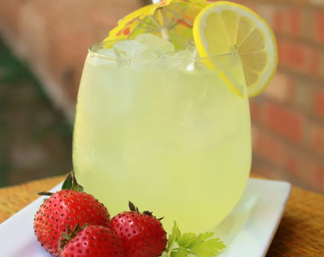

Vintage Lemonade

In the 1800's this is how people made lemonade—you can do it too! It's not that difficult, and tastes wonderful!
Ingredients
- 5 lemons
- 1 ¼ cups white sugar
- 1 ¼ quarts water
Directions
Step 1
Peel the rinds from the 5 lemons and cut them into 1/2 inch slices. Set the lemons aside.
Step 2
Place the rinds in a bowl and sprinkle the sugar over them. Let this stand for about one hour, so that the sugar begins to soak up the oils from the lemons.
Step 3
Bring water to a boil in a covered saucepan and then pour the hot water over the sugared lemon rinds. Allow this mixture to cool for 20 minutes and then remove the rinds.
Step 4
Squeeze the lemons into another bowl. Pour the juice through a strainer into the sugar mixture. Stir well, pour into pitcher and pop it in the fridge! Serve with ice cubes.